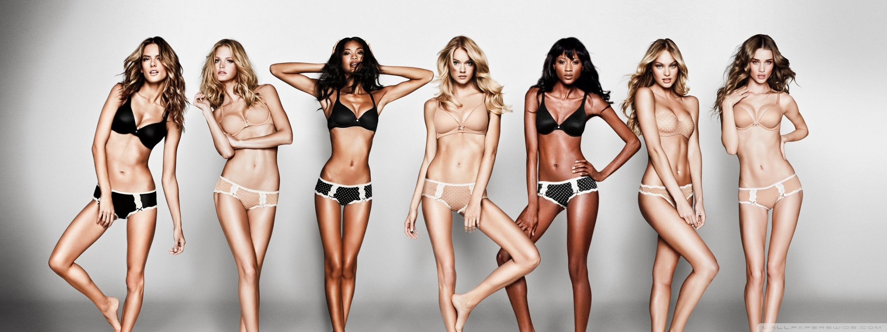
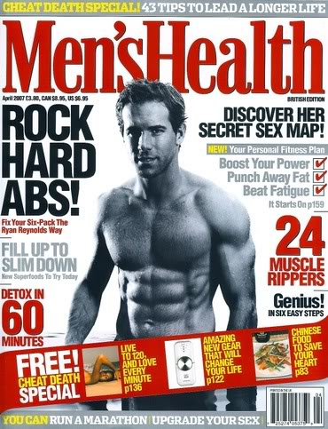
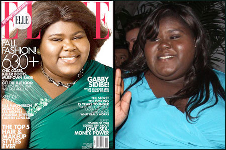
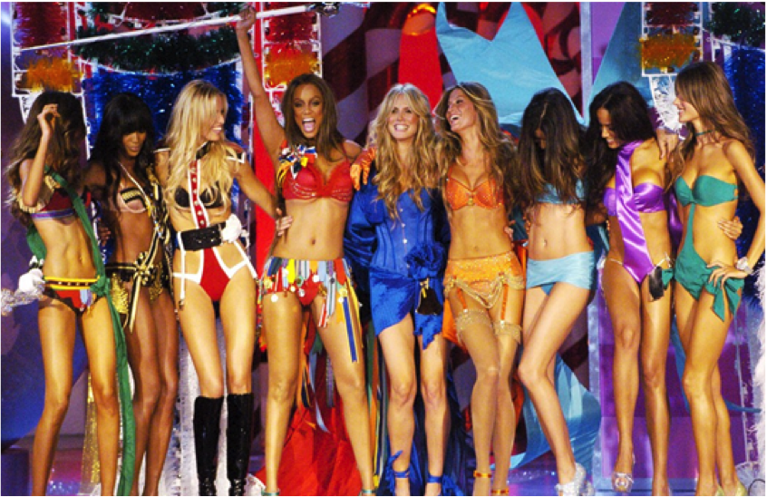

Queer Power Now
in the new millenium!

Drian Juarez
- Program Manager Transgender Economic Empowerment Project
- LA LGBT Center - Legal Services
- Djuarez@lagaycenter.org
- 323-860-3713

Hannah Howard
- I write code for a living
- @techgirlwonder
- hannah@hannahhoward.net
What is Body Image?
Body image is how we see ourselves
..but..
how we see ourselves is not entirely of our own making
Every day media teachs how we SHOULD see ourselves
Women should be skinny and feminine
Men should be strong and tough
Genderqueer bodies are ugly...
...and asexual.
Beauty is white...
...and lighter is better
Unfortunately, it's not getting better...
90s Victoria Secret...
Gisele Bundchen: 5’11 123 lbs
Naomi Campbell: 5’9 125lbs
Karolina Kurkova: 5’11 130 lbs
Heidi Klum: 5’9.5 132 lbs
Tyra Banks: 5’10 150 lbs
Bold Claim:
No matter who you are, but particularly if you're from a marginalized community, society holds you to unrealistic standards of beauty that are at best difficult and in many cases physically impossible to achieve
Body Image Exercise
- What/whom influenced how you view your body?
- How did you get to the point of how you view your body today?
Trans and gender non-conforming people know a thing or two about body image
Many of us go through large portions of our lives hating our bodies
Many of us modify our bodies so we can feel happier with them
There's nothing wrong with that
People have been modifying their bodies since the beginning of time
Question: Where does self-acceptance come in?
How do we love our bodies no matter what state they're in?
I’m still unsure if I learned to view my body as this villain because of how trans* bodies are viewed in the media – or if it could’ve been different if I was taught to love myself wholly despite the limitations my body in this society placed on me. - Janet Mock
I am not trapped by my body. I am trapped by your beliefs. And I want to reclaim this body from those who want it to breathe and be fed by their dogmas. - Sass Rogando Sasot
Bold Claim:
Loving and accepting yourself and your body is a revolutionary act!
What is revolutionary?
At the risk of seeming ridiculous, let me say that the true revolutionary is guided by a great feeling of love. It is impossible to think of a genuine revolutionary lacking this quality... We must strive every day so that this love of living humanity will be transformed into actual deeds, into acts that serve as examples, as a moving force. - Ernesto Che Guevara
If we accept that loving our bodies is a revolutionary act, how do we do it?
Discuss!
Caring for myself is not self-indulgence, it is self-preservation, and that is an act of political warfare. - Audre Lorde